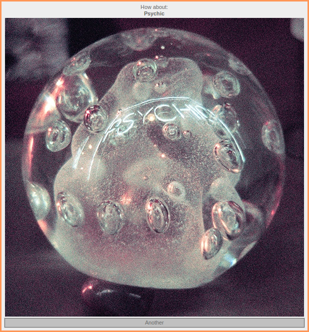
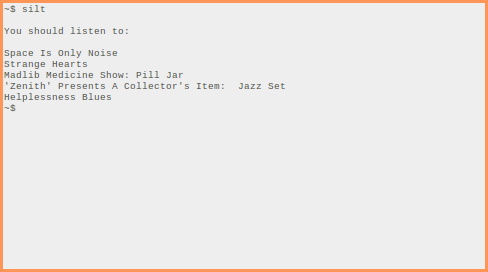

silt
DownloadGithub Page
What?
A shuffle button for your vinyl!
Pulls your record collection from discogs then randomly chooses one and displays its album art.
Why?
Why not? I couldn't decide what to listen to from my vinyl collection so I automated it.
Usage?
Install using the provided install.sh, then run with "silt" in the command line.
"-r" to change number of recommendations
"-update" to update local library
"-gtk" for a sweet windowed experience! With cover art!
Also runnable from gnome-menu, xfce-menu, dmenu and anywhere .desktops are found.
What have I learned so far?
APIs and JSON make things very easy, especially when working cross-language.
Put the executable somewhere safe then symlink it to /usr/local/bin.
Key/secret authentication over headers.
How to use PyGi to create GTK interfaces
Writing simple installation scripts.
I do not know how to correctly package/make/bundle python scripts
(but asking first, downloading, unpacking, and moving the dependencies is an OK solution.)
Worked with git branches and conflicts when branching incorrectly
Screenshots?

Bugs?
You betcha.
When starting the GTK it will load the album art from the last time it was ran. Should be an easy fix.
Need to make a seperate window when run without internet or Discogs access
Next?
Port to web/javascript.
Add local image caching?
Make a .desktop so it's runnable from launchers.